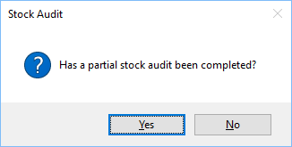

An audit of current stock can be completed at any time, either in part or all stock.

Once a full or partial stock audit has been completed enter the quantity of stock for each product
item in the “New Quantity” column, if a partial audit is being completed then leave the item
blank.
Click the X in the top right corner, you will be presented with a new form

If you click Yes, only stock items with a value in the “New Quantity” will be updated, if you
click No then all stock items will be updated, the items without a value will be set to 0 (zero).
Stock being moved out will be logged against the user moving stock out. See Stock History for
more details.